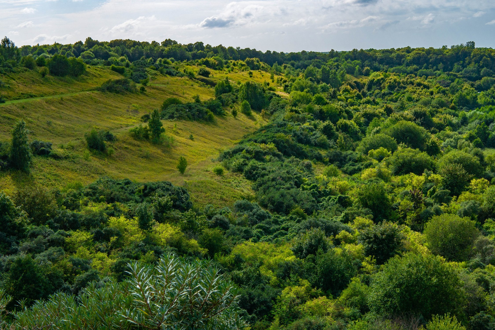

Одно из самых красивых мест Калининградской области

Филинская бухта находится на побережье Балтийского моря между Светлогорском и Приморьем. Это место славится высокими берегами, красивыми видами на море и чистым воздухом.
Здесь можно прогуляться по лесным тропам, насладиться закатом, сделать красивые фотографии и просто отдохнуть на природе.
Расстояние от Зеленоградска: около 35 км.